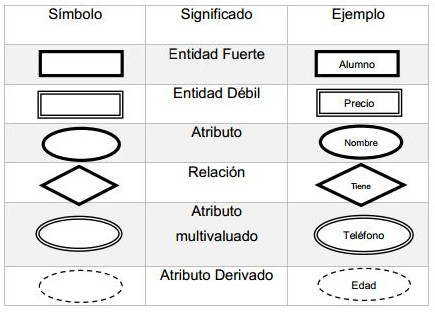
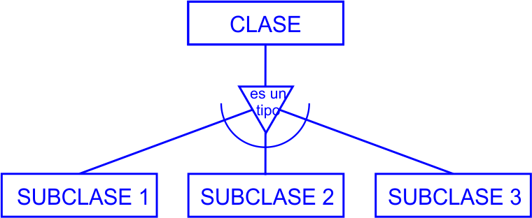
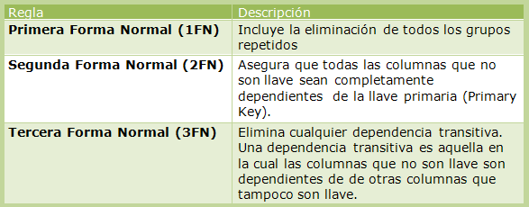

Conceptos Básicos
1.1.1 Datos: Un dato es la representación de una variable que puede ser cuantitativa o cualitativa, indican un valor que se le asigna a las cosas. Los datos son información. Los datos describen en su conjunto nos hablan de hechos empíricos. Un dato por sí solo no puede demostrar demasiado, siempre se evalúa el conjunto para poder examinar los resultados. Para examinarlos, primero hay que organizarlos o tabularlos. Los datos pueden ser generados de forma automática y acumulativa con diferentes tipos de programas informáticos o bien tienen que ser siempre ingresados para formar una base de datos. Los datos que se ingresan en una base pueden ser de diversos tipos, según la información que se acumule en dicha base. Por ejemplo puede ser una base de datos de información personal, entonces los datos serán numéricos, alfabéticos y alfa-numéricos. En informática, en programación, un dato es la expresión general que va a describir aquellas características de la entidad sobre la que opera. En la estructura de datos, un dato es la más mínima parte de la información.
1.1.2 Información:
La información está constituida por un grupo de datos ya supervisados y ordenados, que sirven para construir un mensaje basado en un cierto
fenómeno o ente. La información permite resolver problemas y tomar decisiones, ya que su aprovechamiento racional es la base
del conocimiento.
Por lo tanto, otra perspectiva nos indica que la información es un recurso que otorga significado o sentido a la realidad, ya que mediante códigos
y conjuntos de datos, da origen a los modelos de pensamiento humano.
Existen diversas especies que se comunican a través de la transmisión de información para su supervivencia; la diferencia para los seres
humanos radica en la capacidad que tiene el hombre para armar códigos y símbolos con significados complejos, que conforman el lenguaje
común para la convivencia en sociedad.
Los datos son percibidos a través de los sentidos y, una vez que se integran, terminan por generar la información que se necesita para producir
el conocimiento. Se considera que la sabiduría es la habilidad para juzgar de modo adecuado cuándo, cómo, dónde y con qué objetivo se
emplea el conocimiento adquirido.
Los especialistas afirman que existe un vínculo indisoluble entre la información, los datos, el conocimiento, el pensamiento y el lenguaje.
1.1.3 Conocimiento: El conocimiento es un conjunto de información almacenada mediante la experiencia o el aprendizaje (a posteriori), o a través de la introspección (a priori). En el sentido más amplio del término, se trata de la posesión de múltiples datos interrelacionados que, al ser tomados por sí solos, poseen un menor valor cualitativo. El conocimiento tiene su origen en la percepción sensorial, después llega al entendimiento y concluye finalmente en la razón. Se dice que el conocimiento es una relación entre un sujeto y un objeto. El proceso del conocimiento involucra cuatro elementos: sujeto, objeto, operación y representación interna (el proceso cognoscitivo).
Tipos de Sistemas
1.2.1 Sistema de Procesamiento de Datos: El procesamiento de datos es, en general, "la acumulación y manipulación de elementos de datos para producir información significativa." El procesamiento de datos trata de un subconjunto del procesamiento de la información, el cambio (procesamiento) de la información de cualquier manera detectable por un observador. El procesamiento de datos es distinto del procesamiento de textos, pues este último manipula textos nada más en lugar de los datos. El procesamiento de datos es el proceso lógico del pensamiento en el cual intervienen informaciones referidas a una problemática objeto de estudio y que permita establecer inferencias sobre la base del análisis, comparaciones y relaciones.
1.2.2 Sistema de Procesamiento de Conocimientos: Los sistemas de conocimiento son sistemas expertos ideados para crear nuevo conocimiento a partir del conocimiento explícito presente en los documentos de las bases de datos. Siguen el proceso KDD1 en sus diferentes fases. Tienen su origen en los softwares cienciométricos desarrollados para facilitar el análisis de grandes conjuntos documentales científicos o tecnológicos (artículos científicos, patentes, tesis doctorales, etc.).2 Los sistemas de conocimiento son de gran utilidad para los equipos de inteligencia competitiva y de vigilancia tecnológica de las organizaciones ya que proporcionan informes, diagramas, gráficos y mapas muy apreciados en la toma de decisiones estratégicas. La evaluación de redes de conocimiento3 se beneficia de la existencia de sistemas de conocimiento desarrollados para transformar la información en conocimiento,4 procesando de una manera rápida y controlada ingentes conjuntos documentales y creando nuevo conocimiento a partir de ellos. La ingeniería del conocimiento es la rama de la inteligencia artificial que tiene por objetivo la creación de indicadores, métodos e instrumentos de naturaleza matemática, informática y lingüística, para el análisis y la representación cartográfica de la información científica y técnica.
1.2.3 Sistema de Archivos: Un sistema de archivos son los métodos y estructuras de datos que un sistema operativo utiliza para seguir la pista de los archivos de un disco o partición; es decir, es la manera en la que se organizan los archivos en el disco. El término también es utilizado para referirse a una partición o disco que se está utilizando para almacenamiento, o el tipo del sistema de archivos que utiliza. Así uno puede decir “tengo dos sistemas de archivo” refiriéndose a que tiene dos particiones en las que almacenar archivos, o que uno utiliza el sistema de “archivos extendido”, refiriéndose al tipo del sistema de archivos. La diferencia entre un disco o partición y el sistema de archivos que contiene es importante. Unos pocos programas (incluyendo, razonablemente, aquellos que crean sistemas de archivos) trabajan directamente en los sectores crudos del disco o partición; si hay un archivo de sistema existente allí será destruido o corrompido severamente. La mayoría de programas trabajan sobre un sistema de archivos, y por lo tanto no utilizarán una partición que no contenga uno (o que contenga uno del tipo equivocado). Antes de que una partición o disco sea utilizada como un sistema de archivos, necesita ser iniciada, y las estructura de datos necesitan escribirse al disco. Este proceso se denomina construir un sistema de archivos.
Diferencias entre manejador de archivos y sistema manejador de base de datos
Sistema de archivos:
Sistemas de bases de datos:
- 1. Manejo de archivos en texto plano.
- 2. Búsqueda de tres tipos : secuencial, aleatorio, indexado.
- 3. No existen las actualizaciones, se simulan dando de baja el registroy dando de alta el nuevo con la modificación.
- 4. Tienen independencia lógica y física la mayoría de ellos.
- 5. Cuenta con redundancia no controlada y errores de referencias.
- 6. Sus componentes son: archivos, registros, campos.
Sistemas de bases de datos:
- 1. Existe redundancia controlada e integridad referencia.
- 2. Implementa mayor seguridad.
- 3. Existen actualizaciones directas.
- 4. No tienen independencia ni lógica ni física.
- 5. Sus componentes son Hw, Sw, BD y Usuarios.
Modelos de Bases de Datos
2.1 Definición: Un modelo de base de datos (Data Información Estructurada) es un tipo de modelo de datos que determina la estructura lógica de una base de datos y de manera fundamental determina el modo de almacenar, organizar y manipular los datos.
Modelo Entidad-Relación
2.2 Definición: Un diagrama entidad-relación, también conocido como modelo entidad relación o ERD, es un tipo de diagrama de flujo que ilustra cómo las "entidades", como personas, objetos o conceptos, se relacionan entre sí dentro de un sistema. Los diagramas ER se usan a menudo para diseñar o depurar bases de datos relacionales en los campos de ingeniería de software, sistemas de información empresarial, educación e investigación. También conocidos como los ERD o modelos ER, emplean un conjunto definido de símbolos, tales como rectángulos, diamantes, óvalos y líneas de conexión para representar la interconexión de entidades, relaciones y sus atributos. Son un reflejo de la estructura gramatical y emplean entidades como sustantivos y relaciones como verbos. Los diagramas de ER se relacionan con los diagramas de estructura de datos (DSD), que se centran en las relaciones de los elementos dentro de las entidades, en lugar de las relaciones entre las entidades mismas. Los diagramas ER a menudo se combinan con los diagramas de flujo de datos (DFD), que trazan el flujo de la información para procesos o sistemas.
Modelo Entidad-Relación Extendido
Definición: Se trata de una técnica cuyo objetivo es la representación y definición de todos los datos que se introducen, almacenan, transforman y producen dentro de un sistema de información, sin tener en cuenta las necesidades de la tecnología existente, ni otras restricciones. Dado que el modelo de datos es un medio para comunicar el significado de los datos, las relaciones entre ellos y las reglas de negocio de un sistema de información, una organización puede obtener numerosos beneficios de la aplicación de esta técnica, pues la definición de los datos y la manera en que éstos operan son compartidos por todos los usuarios.
Las ventajas de realizar un modelo de datos son, entre otras: • Comprensión de los datos de una organización y del funcionamiento de la organización. • Obtención de estructuras de datos independientes del entorno físico. • Control de los posibles errores desde el principio, o al menos, darse cuenta de las deficiencias lo antes posible. • Mejora del mantenimiento. Aunque la estructura de datos puede ser cambiante y dinámica, normalmente es mucho más estable que la estructura de procesos. Como resultado, una estructura de datos estable e integrada proporciona datos consistentes que puedan ser fácilmente accesibles según las necesidades de los usuarios, de manera que, aunque se produzcan cambios organizativos, los datos permanecerán estables. Este diagrama se centra en los datos, independientemente del procesamiento que los transforma y sin entrar en consideraciones de eficiencia. Por ello, es independiente del entorno físico y debe ser una fiel representación del sistema de información objeto del estudio, proporcionando a los usuarios toda la información que necesiten y en la forma en que la necesiten.
Modelo Semántico
2.2 Definición: Es un modelo conceptual de datos en el que se incluye información semántica. Esto significa que el modelo describe el significado de sus instancias. Tal modelo de dato semántico es una abstracción que define cómo los símbolos almacenados (los datos de la instancia) se relacionan con el mundo real. Es un modelo de datos conceptual que incluye la capacidad de expresar información que permite el intercambio de información para interpretar su significado (semántico) de las instancias, sin necesidad de conocer el meta-modelo. Estos modelos semánticos están orientados a los hechos (en oposición a los orientados a objetos). Los hechos son típicamente expresados por relaciones binarias entre elementos de datos, mientras que las relaciones de orden superior se expresan como colecciones de relaciones binarias. Típicamente las relaciones binarias tienen la forma de ternas: Objeto-< Tipo de Relación >-Objeto. Por ejemplo: La Torre Eiffel < se encuentra en > París.
Normalización
3.1 Definición:
La normalización (también denominada estandarización) es el proceso de elaborar, aplicar y mejorar las normas que se aplican a distintas
actividades científicas, industriales o económicas, con el fin de ordenarlas y mejorarlas. Por su parte, la asociación estadounidense para pruebas
de materiales (ASTM), define la estandarización como el proceso de formular y aplicar reglas, para una aproximación ordenada a una actividad
específica, para el beneficio y con la cooperación de todos los involucrados.
Según la ISO (International Organization for Standarization), la normalización es la actividad que tiene por objeto establecer, ante problemas
reales o potenciales, disposiciones destinadas a usos comunes y repetidos, con el fin de obtener un nivel de ordenamiento óptimo en un
contexto dado, que puede ser tecnológico, político, o económico.
3.2 Objetivos: • Simplificación: se trata de reducir el número de modelos y de normas, para quedarse únicamente con los más necesarios. • Unificación: se trata de permitir los intercambios y las comparaciones a nivel internacional. • Especificación: se persigue evitar errores de identificación, creando un lenguaje claro y preciso. Las elevadas sumas de dinero que los países desarrollados invierten en los organismos normalizadores, tanto nacionales como internacionales, es un indicio o una prueba de la importancia que se da a esta cuestión.
Formas Normales
4.1 Definición: En la teoría de bases de datos relacionales, las formas normales (NF) proporcionan los criterios para determinar el grado de vulnerabilidad de una tabla a inconsistencias y anomalías lógicas. Cuanto más alta sea la forma normal aplicable a una tabla, menos vulnerable será a inconsistencias y anomalías. Cada tabla tiene una "forma normal más alta" (HNF): por definición, una tabla siempre satisface los requisitos de su HNF y de todas las formas normales más bajas que su HNF; también por definición, una tabla no puede satisfacer los requisitos de ninguna forma normal más arriba que su HNF. Las formas normales son aplicables a tablas individuales; decir que una base de datos entera está en la forma normal n es decir que todas sus tablas están en la forma normal n. Los recién llegados al diseño de bases de datos a veces suponen que la normalización procede de una manera iterativa, es decir un diseño 1NF primero se normaliza a 2NF, entonces a 3NF, etcétera. Ésta no es una descripción exacta de cómo la normalización trabaja típicamente. Una tabla sensiblemente diseñada es probable que esté en 3NF en la primera tentativa; además, si está en 3NF, también es extremadamente probable que tenga una forma HNF de 5NF. Conseguir formas normales "más altas" (sobre 3NF) usualmente no requiere un gasto adicional de esfuerzo por parte del diseñador, porque las tablas 3NF usualmente no necesitan ninguna modificación para satisfacer los requisitos de estas formas normales más altas. Edgar F. Codd originalmente definió las tres primeras formas normales (1NF, 2NF, y 3NF). Estas formas normales se han resumido como requiriendo que todos los atributos no-clave sean dependientes en "la clave, la clave completa, y nada excepto la clave". Las cuarta y quinta formas normales (4NF y 5NF) se ocupan específicamente de la representación de las relaciones muchos a muchos y uno muchos entre los atributos. La sexta forma normal (6NF), en pocas palabras, se basa en el principio de que si se tiene más de dos claves candidatas en una tabla, se tendrán que crear otras tablas con estas. Por ejemplo si tenemos "ítem" con un id código de producto y con los atributos descripción y precio que son claves candidatas se tendría que crear otras tablas separando la tabla ítem: ItemDesc {código_producto*, Descripción} ItemPrecio {código_producto*, Precio}. La sexta forma normal no es muy utilizada porque genera más tablas cuando tenemos pequeñas bases de datos.
Primera Forma Normal
1FN:
La primera forma normal (1FN o forma mínima) es forma normal usada en normalización de bases de datos. Una tabla de base de datos
relacional que se adhiere a la 1FN es una que satisface cierto conjunto mínimo de criterios. Estos criterios se refieren básicamente a asegurarse
que la tabla es una representación fiel de una relación1 y está libre de "grupos repetitivos".2
Sin embargo, el concepto de "grupo repetitivo", es entendido de diversas maneras por diferentes teóricos. Como consecuencia, no hay un
acuerdo universal en cuanto a qué características descalificarían a una tabla de estar en 1FN. Muy notablemente, la 1FN, tal y como es definida
por algunos autores excluye "atributos relación-valor" (tablas dentro de tablas) siguiendo el precedente establecido por (E.F. Codd (algunos de
esos autores son: Ramez Elmasri y Shamkant B. Navathe3). Por otro lado, según lo definido por otros autores, la 1FN sí los permite (por
ejemplo como la define Chris Date).
Según la definición de Date de la 1FN, una tabla está en 1FN si y solo si es "isomorfa a alguna relación", lo que significa, específicamente, que
satisface las siguientes cinco condiciones:
1. No hay orden de arriba-a-abajo en las filas.
2. No hay orden de izquierda-a-derecha en las columnas.
3. No hay filas duplicadas.
4. Cada intersección de fila-y-columna contiene exactamente un valor del dominio aplicable (y nada más).
5. Todas las columnas son regulares [es decir, las filas no tienen componentes como IDs de fila, IDs de objeto, o timestamps
ocultos].
Segunda Forma Normal
2FN: La segunda forma normal (2NF) es una forma normal usada en normalización de bases de datos. La 2NF fue definida originalmente por E.F. Codd1 en 1971. Una tabla que está en la primera forma normal (1NF) debe satisfacer criterios adicionales para calificar para la segunda forma normal. Específicamente: una tabla 1NF está en 2NF si y solo si, dada una clave primaria y cualquier atributo que no sea un constituyente de la clave primaria, el atributo no clave depende de toda la clave primaria en vez de solo de una parte de ella. En términos levemente más formales: una tabla 1NF está en 2NF si y solo si ninguno de sus atributos no-principales son funcionalmente dependientes en una parte (subconjunto propio) de una clave candidata (Un atributo no-principal es uno que no pertenece a ninguna clave candidata).
Tercera Forma Normal
3FN:
La tercera forma normal (3NF) es una forma normal usada en la normalización de bases de datos. La 3NF fue definida originalmente por E.F.
Codd1 en 1971. La definición de Codd indica que una tabla está en 3NF si y solo si las tres condiciones siguientes se cumplen:
• La tabla está en la segunda forma normal (2NF)
• Ningún atributo no-primario de la tabla es dependiente transitivamente de una clave primaria
• Es una relación que no incluye ningún atributo clave
Un atributo no-primario es un atributo que no pertenece a ninguna clave candidata. Una dependencia transitiva es una dependencia
funcional X → Z en la cual Z no es inmediatamente dependiente de X, pero sí de un tercer conjunto de atributos Y, que a su vez depende de X.
Es decir, X → Z por virtud de X → Y e Y → Z.
Una formulación alternativa de la definición de Codd, dada por Carlo Zaniolo2 en 1982, es ésta: Una tabla está en 3NF si y solo si, para cada
una de sus dependencias funcionales X → A, por lo menos una de las condiciones siguientes se mantiene:
• X contiene A, ó
• X es una superclave, ó
• A es un atributo primario (es decir, A está contenido dentro de una clave candidata)
La definición de Zaniolo tiene la ventaja de dar un claro sentido de la diferencia entre la 3NF y la más rigurosa forma normal de Boyce-
Codd (BCNF). La CONFÍN simplemente elimina la tercera alternativa ("A es un atributo primario").
Cuarta y Quinta Forma Normal
4FN: La cuarta forma normal (4NF) es una forma normal usada en la normalización de bases de datos. La 4NF se asegura de que las dependencias multivaluadas independientes estén correctas y eficientemente representadas en un diseño de base de datos. La 4NF es el siguiente nivel de normalización después de la forma normal de Boyce-Codd (BCNF). Una tabla está en 4NF si y solo si esta en Tercera forma normal o en BCNF (Cualquiera de ambas) y no posee dependencias multivaluadas no triviales. La definición de la 4NF confía en la noción de una dependencia multivaluada. Una tabla con una dependencia multivaluada es una donde la existencia de dos o más relaciones independientes muchos a muchos causa redundancia; y es esta redundancia la que es suprimida por la cuarta forma normal.
5FN: La quinta forma normal (5FN), también conocida como forma normal de proyección-unión (PJ/NF), es un nivel de normalización de bases de datos diseñado para reducir redundancia en las bases de datos relacionales que guardan hechos multi-valores aislando semánticamente relaciones múltiples relacionadas. Una tabla se dice que está en 5NF si y sólo si está en 4NF y cada dependencia de unión (join) en ella es implicada por las claves candidatas. La quinta forma normal fue definida por Ronald Fagin en su contribución a congreso "Normal forms and relational database operators" de 19791. Solamente en contadas ocasiones una tabla 4NF no se corresponde con una 5NF. Estas son situaciones en las cuales una restricción compleja del mundo real, que limita las combinaciones válidas de los valores de atributos en la tabla 4NF, no está implícita en la estructura de esa tabla. Si esa tabla no se normaliza a 5NF, la tarea de mantener la consistencia lógica de los datos dentro de la tabla debe ser llevada en parte por la aplicación responsable de inserciones, borrados, y actualizaciones a ella; y hay un riesgo elevado de que los datos dentro de la tabla se vuelvan inconsistentes. Por el contrario, el diseño 5NF excluye la posibilidad de tales inconsistencias.
Otros temas:

Programación